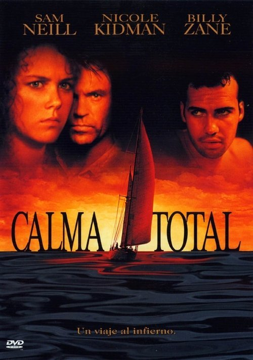

Calma total (1989)
Sinopsis Rápida
En una isla paradisíaca, un grupo de personas en una aparente escapada de lujo descubre que sus vacaciones se convierten en una pesadilla cuando un asesino anónimo empieza a eliminarlos uno a uno.
Sinopsis Detallada
Un grupo de extraños se reúne en una lujosa isla tropical para unas vacaciones aparentemente idílicas. Sin embargo, la paz se rompe rápidamente cuando empiezan a ocurrir muertes misteriosas. El miedo y la paranoia se apoderan del grupo, mientras cada uno se convierte en un sospechoso. La película explora temas de confianza, paranoia y la fragilidad de la civilización en un ambiente aislado. La tensión crece exponencialmente a medida que los asesinatos continúan, dejando a los sobrevivientes preguntándose quién será el próximo.
¿Por qué tenés que verla?
- Una trama llena de giros inesperados que te mantendrá al borde de tu asiento hasta el final.
- La atmósfera tensa y claustrofóbica creada por la dirección y la fotografía es excepcional.
- Su impacto en el subgénero de thrillers con escenarios aislados es notable, inspirando películas posteriores.
- Excelente reparto que ofrece interpretaciones convincentes.
Idea Extra
Comparación de 'Calma Total' con otros thrillers de la época y análisis de su influencia en el cine de suspense moderno.
{{CONTENIDO_RELACIONADO}}